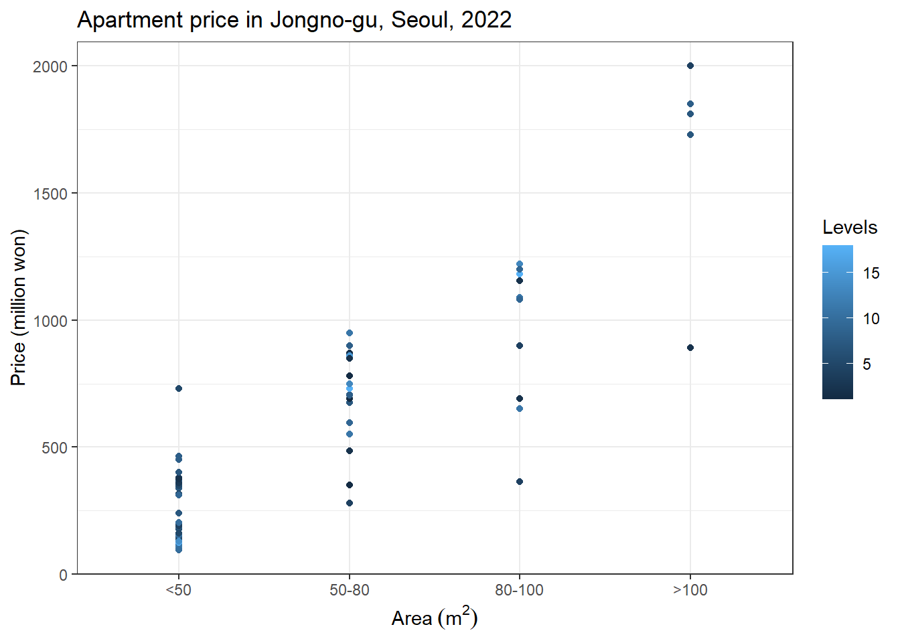

library(XML)
library(RCurl)
library(dplyr)
service_key <- readRDS("apartment_key_datagokr.rds")
datlist <- vector("list", 12)
# combine the data in 2022
for (m in 1:12){
if (m < 10) {
dt <- paste0("20220", m)
} else {
dt <- paste0("2022", m)
}
uri <- paste0("http://openapi.molit.go.kr/OpenAPI_ToolInstallPackage/service/rest/RTMSOBJSvc/getRTMSDataSvcAptTradeDev?LAWD_CD=11110&DEAL_YMD=", dt, "&serviceKey=", service_key)
xml_doc <- xmlTreeParse(uri, useInternalNodes = TRUE, encoding = "UTF-8")
root_node <- xmlRoot(xml_doc)
xml_data <- xmlToDataFrame(nodes = getNodeSet(root_node, '//item'))
datlist[[m]] <- xml_data
}
d <- do.call('rbind', datlist)Apartment transactions in Korea via API provided by the Ministry of Land, Infrastructure, and Transport
R
API
apartment
Data preparation
I will plot the price
# million won
d$price <- as.numeric(gsub('\\,', "", d$거래금액)) / 100
d$area_sq_meter <- as.numeric(d$전용면적) # q
d$area_category <- NA
for(i in 1:nrow(d)) {
ar <- d$area_sq_meter[i]
if(ar < 50){
d$area_category[i] <- "<50"
}
else if(ar >= 50 & ar < 80) {
d$area_category[i] <- "50-80"
}
else if(ar >= 80 & ar < 100) {
d$area_category[i] <- "80-100"
}
else if(ar >= 100) {
d$area_category[i] <- ">100"
}
}
d$area_category <- factor(d$area_category, levels=c("<50", "50-80", "80-100",">100"))
d$levels <- as.numeric(d$층)
library(ggplot2)
d |> as.data.frame() |>
ggplot()+
geom_point(aes(area_category, price, color=levels)) +
labs(x=parse(text=paste0("Area~(m^2)")), y="Price (million won)", color=parse(text=paste0("Levels")))+
theme_bw()+
ggtitle("Apartment price in Jongno-gu, Seoul, 2022") 
# ggsave("apt_price.png", width=3.4*1.5, height=2.7*1.5, units="in")